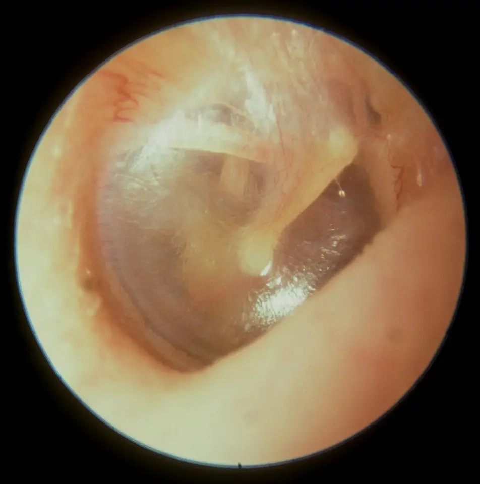

DX.3 — Bouchon de cérumen
Le bouchon de cérumen se juge à l’otoscope : il compte lorsqu’il gêne le patient ou masque le tympan, et seulement dans ce cas S1S8. Son retrait suit une échelle simple, céruménolytique puis irrigation puis retrait instrumental, mais chaque méthode a ses interdits, d’abord la perforation tympanique S1. Le piège principal consiste à attribuer au bouchon une surdité brusque ou une otalgie qui persistent après un conduit enfin libre S3S8.
1. Définition
Les Hôpitaux universitaires de Genève (HUG) définissent le bouchon comme une accumulation de cérumen vue à l’otoscopie, qui donne des symptômes ou empêche d’évaluer l’oreille et le tympan S1. La recommandation américaine d’oto-rhino-laryngologie retient la même définition, fondée sur trois éléments : cérumen visible, symptômes, examen de l’oreille rendu impossible S8.
2. Épidémiologie (Suisse, puis Europe)
Les HUG estiment à 6 % la part de la population générale porteuse d’un bouchon, et cette part augmente chez la personne âgée S2. Aucune cohorte suisse ne mesure l’incidence ; le tableau des chiffres rassemble donc les données italiennes chez l’enfant, puis américaines chez l’adulte, signalées comme non européennes S6S9. Les facteurs associés distinguent les terrains à examiner en priorité, et l’histoire naturelle montre un mécanisme d’auto-nettoyage qui échoue par moments, ce qui explique les récidives après chaque retrait S2S4.
Bouchon de cérumen : données chiffrées par population
| Donnée | Population et mesure | Année | Source |
|---|---|---|---|
| Bouchon chez environ 6 % de la population générale, davantage chez la personne âgée | Enseignement des urgences ambulatoires des HUG, Genève | 2019 | S2 |
| Cérumen présent chez 72,5 % des enfants, bilatéral chez 80,5 % d’entre eux | 819 enfants de 1 mois à 12 ans vus en Italie en novembre 2014 | 2016 | S6 |
| Cérumen obstruant au moins 50 % du conduit chez 43,9 % des enfants porteurs | Même cohorte italienne, quantité jugée pertinente | 2016 | S6 |
| Retrait par le pédiatre dans 28,8 % des cas contre 91,0 % par l’oto-rhino-laryngologiste (ORL) | Même cohorte italienne, attitude du médecin | 2016 | S6 |
| Bouchon partiel ou complet chez 18,6 % des 12 ans et plus, et 32,4 % des 70 ans et plus | 14 230 personnes de l’enquête NHANES (National Health and Nutrition Examination Survey), États-Unis, source non européenne | 2024 | S9 |
| Bouchon chez 35 % des patients âgés hospitalisés, bilatéral chez 19,9 % | 226 patients de 65 ans et plus, hôpital américain, source non européenne | 1990 | S10 |
Le bouchon complet s’associait dans l’enquête américaine à une élévation modeste du seuil auditif moyen, de 4,1 dB à droite, sans lien avec les acouphènes S9. Le sexe masculin, l’âge et un faible niveau de formation augmentaient aussi le risque de bouchon dans cette enquête S9.
Ces chiffres décrivent une présence de cérumen et non une maladie ; seule la combinaison avec des symptômes ou un tympan masqué définit le bouchon à traiter S1S8.
Facteurs associés au bouchon
| Facteur | Mesure de l’association | Population | Source |
|---|---|---|---|
| Sexe masculin | Rapport de cotes de 1,77 | Enquête NHANES, États-Unis, non européenne | S9 |
| Origine afro-américaine | Rapport de cotes de 1,78 par rapport aux personnes blanches | Enquête NHANES, non européenne | S9 |
| Niveau de formation plus élevé | Rapport de cotes de 0,84, donc effet protecteur | Enquête NHANES, non européenne | S9 |
| Âge | Rapport de cotes de 1,02 par année | Enquête NHANES, non européenne | S9 |
| Jeune âge, origine africaine ou asiatique | Cérumen plus fréquent | Enfants italiens | S6 |
| Grand âge | Peau sèche, glandes atrophiées, poils plus longs | Enseignement des HUG | S2 |
| Sténose, exostose, ostéome | Élimination diminuée | Enseignement des HUG | S2 |
Ces associations orientent le dépistage : le médecin examine en priorité l’oreille de la personne âgée, de l’enfant et du patient qui ne peut pas se plaindre S2S6S8. Elles proviennent surtout d’une enquête américaine ; aucune étude suisse ne les confirme, ce qui limite leur transposition directe S9.
Histoire naturelle et récidive
Le cérumen fait partie du mécanisme d’auto-nettoyage de l’oreille, et il s’élimine habituellement de lui-même sans causer de problème S4. Lorsque ce mécanisme échoue, la cire reste dans le conduit, s’y tasse, puis réclame une intervention pour être retirée S4.
Les HUG notent une récidive à long terme après chacune des trois méthodes de retrait, céruménolytique, irrigation ou retrait manuel S2. Cette récidive justifie l’éducation du patient plutôt qu’un retrait préventif répété chez celui qui ne se plaint de rien S8.
Chez l’enfant, la cohorte italienne montre que le cérumen restait souvent en place, au risque de masquer une otite moyenne aiguë et de fausser le diagnostic S6.
3. Physiopathologie
La base à connaître part d’un conduit en cul-de-sac, dont les glandes produisent un cérumen protecteur, et d’une migration épithéliale qui en assure l’élimination S1. Le bouchon naît lorsque la production augmente ou lorsque l’élimination diminue, deux voies que la chaîne causale détaille S2.
Le tableau de corrélation relie chaque mécanisme au signe qu’il produit, puis au geste qui le corrige S1S2S7. Cette logique explique pourquoi le traitement vise la cire, mais aussi la cause qui en empêche l’élimination S2.
Base à connaître : conduit auditif externe et cérumen
Le conduit auditif externe forme un cul-de-sac d’environ 2,5 cm, couvert d’un derme où des glandes sébacées et apocrines sécrètent le cérumen S1. Ce cérumen, riche en lipides et en lysozymes, freine la croissance bactérienne, tandis qu’une migration épithéliale naturelle élimine les débris S1.
Le rôle protecteur du cérumen contre l’infection reste débattu ; les HUG le considèrent néanmoins comme une barrière qu’un nettoyage régulier affaiblit S1. Chez la personne âgée, la peau plus sèche, l’atrophie des glandes et des poils plus longs favorisent l’accumulation S2.
| Élément | Rôle | Conséquence clinique | Source |
|---|---|---|---|
| Glandes sébacées et apocrines | Sécrètent le cérumen | Une surproduction donne le bouchon | S1S2 |
| Lysozymes et lipides | Freinent les bactéries | Un conduit trop nettoyé perd cette protection | S1 |
| Migration épithéliale | Pousse les débris vers l’extérieur | Son échec retient la cire | S1S2 |
| Tympan au fond du cul-de-sac | Ferme le conduit | Un bouchon complet le masque | S1 |
Chaîne causale : de la cire au symptôme
| Étape | Mécanisme | Ce qui l’entretient | Source |
|---|---|---|---|
| 1. Production accrue | Sécrétion excessive des glandes du conduit | Terrain individuel | S2 |
| 2. Élimination diminuée | Échec de la migration épithéliale naturelle | Âge, peau sèche, poils plus longs | S2 |
| 3. Obstacle mécanique | Ostéome, exostoses ou sténose du conduit | Sténose idiopathique, tumorale, post-traumatique ou postopératoire | S2 |
| 4. Cire repoussée | Le coton-tige tasse le cérumen au fond du conduit | Nettoyage par petits objets | S1S3 |
| 5. Œdème du conduit | Une otite externe rétrécit la lumière | Infection du conduit | S2 |
| 6. Obstruction | La cire ferme la lumière et bloque l’onde sonore | Surdité de transmission | S7 |
La dernière étape explique l’hypoacousie : l’onde sonore ne franchit plus le conduit, alors que l’oreille interne reste intacte S7. Les HUG ajoutent le port d’appareils auditifs aux facteurs qui perturbent l’équilibre de la peau du conduit S1.
Corrélation : mécanisme, signe, examen, geste
| Mécanisme | Signe | Examen qui le montre | Geste | Source |
|---|---|---|---|---|
| Obstruction du conduit | Baisse d’audition, plénitude | Otoscopie, diapason | Retrait du bouchon | S1S7 |
| Pression sur la peau du conduit | Otalgie, prurit | Otoscopie | Retrait, puis contrôle du conduit | S1 |
| Irritation proche du tympan | Acouphène, vertige | Otoscopie après retrait | Recherche d’une autre cause si persistance | S1S8 |
| Exostose ou ostéome | Récidive rapide, conduit étroit | Examen au microscope par l’ORL | Retrait par l’ORL | S1S2 |
| Cire tassée par un objet | Bouchon profond | Otoscopie | Arrêt du coton-tige | S1S3 |
4. Démarche diagnostique
La démarche commence toujours par l’otoscopie, car elle seule montre la cire, juge l’obstruction et dit si le tympan reste visible S1S8. Le médecin vérifie ensuite que la cire explique les plaintes ; les étapes ordonnées fixent ce raisonnement en six temps S8.
Le tableau comparatif confronte le bouchon aux autres causes de surdité ou d’otalgie à conduit anormal, dont certaines exigent un avis le jour même S3S7. Le contrôle du tympan après retrait clôt la démarche, puisqu’un symptôme persistant impose alors un autre diagnostic S8.
Les pièges de la démarche montrent les erreurs qui retardent un diagnostic sérieux derrière une cire banale S3S6.
Démarche en six étapes
| Étape | Question | Action | Source |
|---|---|---|---|
| 1 | La cire est-elle visible à l’otoscopie ? | Otoscopie des deux oreilles, pavillon tiré vers le haut et l’arrière | S1S8 |
| 2 | Donne-t-elle des symptômes, ou masque-t-elle le tympan ? | Recherche de baisse d’audition, plénitude, otalgie, prurit, acouphène, vertige | S1 |
| 3 | Le patient peut-il s’exprimer ? | Évaluation active chez l’enfant et la personne avec trouble cognitif | S1S8 |
| 4 | Un facteur modifie-t-il la conduite ? | Anticoagulant, immunodépression, diabète, radiothérapie, sténose, exostose, tympan non intact | S8 |
| 5 | Quelle méthode choisir ? | Céruménolytique, irrigation ou retrait instrumental selon les interdits | S1 |
| 6 | Le retrait a-t-il résolu le problème ? | Otoscopie de contrôle et nouvelle évaluation des symptômes | S8 |
Tableau comparatif : bouchon et diagnostics voisins
| Diagnostic | Élément qui oriente | Examen qui tranche | Conduite | Source |
|---|---|---|---|---|
| Bouchon de cérumen | Cire visible, surdité progressive, plénitude | Otoscopie | Retrait par l’échelle des méthodes | S1 |
| Otite externe aiguë | Douleur au tragus, œdème du conduit, début en 48 heures | Otoscopie, douleur au tragus | Toilette puis traitement local | S1 |
| Corps étranger | Objet visible dans le conduit | Otoscopie | Démarche du DX.5 | S7 |
| Surdité brusque de perception | Baisse d’audition installée en 3 jours ou moins, sans cause externe ou moyenne | Diapason, audiométrie | Avis ORL ou urgences en 24 heures | S3 |
| Tumeur ou sténose du conduit | Conduit rétréci, masse, récidive rapide | Examen au microscope par l’ORL | Avis ORL | S2S7 |
| Otite externe nécrosante 🚩 | Diabète décompensé, immunosuppression, extension au pavillon | Examen par l’ORL | Avis ORL immédiat | S1 |
La surdité brusque reste le diagnostic à ne pas manquer : un bouchon découvert par hasard ne doit jamais retarder son orientation S3. Le protocole des HUG demande un avis ORL immédiat lorsque l’otite touche un diabétique décompensé ou un immunodéprimé S1.
Pièges de la démarche diagnostique
| Piège | Conséquence | Parade | Source |
|---|---|---|---|
| Conclure au bouchon sans voir le tympan après retrait | Otite moyenne ou perforation méconnue | Otoscopie de contrôle systématique | S6S8 |
| Attribuer une surdité brutale à une cire partielle | Surdité brusque traitée trop tard | Diapason, puis avis ORL en 24 heures | S3S7 |
| Irriguer sans connaître l’état du tympan | Perforation, atteinte des osselets ou de l’oreille interne | Anamnèse d’opération, de drain et de perforation | S1 |
| Retirer une cire asymptomatique | Geste inutile, risque de traumatisme | Conseil d’hygiène seul | S8 |
| Négliger la cire chez l’enfant fébrile | Otite moyenne aiguë mal diagnostiquée | Retrait pour voir le tympan | S6 |
| Oublier l’oreille du patient appareillé | Bouchon méconnu, appareil inefficace | Otoscopie à chaque consultation | S8 |
Le dernier contrôle protège contre l’erreur la plus fréquente : un symptôme qui persiste malgré un conduit libre signale toujours un autre diagnostic S8.
5. Anamnèse ciblée et drapeaux rouges
L’entretien cherche les symptômes que les HUG attribuent au bouchon, puis les questions qui modifient la conduite, car elles décident de la méthode de retrait S1S8. Les drapeaux rouges séparent le bouchon simple des situations qui relèvent de l’ORL ou d’une évaluation urgente S1S3.
Certaines populations particulières ne se plaignent pas ; le médecin doit alors chercher le bouchon lui-même, notamment chez l’enfant et le patient appareillé S8.
Questions ciblées et ce que la réponse change
| Question | Réponse qui compte | Conséquence | Source |
|---|---|---|---|
| Entendez-vous moins bien, avez-vous l’oreille pleine ? | Oui, de façon progressive | Bouchon symptomatique probable | S1 |
| Avez-vous des démangeaisons, une douleur, des acouphènes, des vertiges ? | Oui | Symptômes compatibles avec le bouchon | S1 |
| La baisse d’audition s’est-elle installée en 3 jours ou moins ? | Oui, et depuis moins de 30 jours | Avis ORL ou urgences dans les 24 heures | S3 |
| Prenez-vous un anticoagulant ? | Oui | Retrait par l’ORL | S1S8 |
| Êtes-vous diabétique, immunodéprimé ou irradié dans la région ORL ? | Oui | Retrait par l’ORL ; irrigation à éviter | S1 |
| Avez-vous une perforation, un drain ou une opération de l’oreille ? | Oui | Ni céruménolytique ni irrigation | S1S2 |
| Faites-vous des otites externes à répétition ? | Oui | Céruménolytique à éviter, avis ORL | S1 |
| Utilisez-vous des cotons-tiges ? | Oui | Cause probable du bouchon tassé | S1S3 |
Drapeaux rouges et délai de réponse
| Drapeau | Ce qu’il fait craindre | Conduite | Délai | Source |
|---|---|---|---|---|
| Surdité installée en 3 jours ou moins, depuis moins de 30 jours, sans cause externe ou moyenne | Surdité brusque de perception | ORL ou urgences | 24 heures | S3 |
| Surdité unilatérale avec trouble sensitif ou affaissement facial du même côté | Lésion neurologique, accident vasculaire | ORL, ou filière accident vasculaire | 24 heures | S3 |
| Immunodépression, otalgie et otorrhée sans réponse en 72 heures | Infection grave du conduit | ORL | 24 heures | S3 |
| Diabète décompensé, immunodépression ou radiothérapie ORL | Infection compliquée après le geste | Extraction par l’ORL | Sans délai fixé | S1 |
| Néoplasie, exostose ou ostéome du conduit | Obstacle anatomique | Extraction par l’ORL | Sans délai fixé | S1 |
| Tympanoplastie, myringoplastie ou perforation | Lésion de l’oreille moyenne par l’eau | Extraction par l’ORL | Sans délai fixé | S1 |
Les HUG regroupent ces situations sous la règle « extraction par ORL », car le geste de médecine de premier recours y expose à une complication évitable S1. NICE (National Institute for Health and Care Excellence) fixe les délais de 24 heures, que l’enseignement des HUG ne chiffre pas S3.
Populations particulières
| Population | Particularité | Conduite | Source |
|---|---|---|---|
| Jeune enfant | Ne décrit pas ses symptômes ; cérumen fréquent | Évaluation active et rapide du besoin de retrait | S6S8 |
| Enfant de moins de 3 ans | Céruménolytique Cérumenol déconseillé dans l’enseignement des HUG | Autre méthode ou avis spécialisé | S2 |
| Trouble cognitif, retard du développement, trisomie 21 | Ne peut pas exprimer la gêne | Indication de retrait même sans plainte | S1S8 |
| Porteur d’appareil auditif | L’appareil perturbe l’équilibre de la peau du conduit | Otoscopie à chaque consultation | S1S8 |
| Personne âgée | Peau sèche, poils plus longs | Recherche du bouchon devant une baisse d’audition | S2S10 |
Le gain dépasse parfois l’audition : dans une petite étude américaine, le retrait améliorait aussi le score cognitif de résidents âgés, ce qui reste une donnée non européenne S10.
6. Examen physique ciblé, région par région
L’examen suit l’oreille de dehors en dedans, puis teste l’audition et le nerf facial, avec une fenêtre par région S1S3S7. La région 1 porte sur le pavillon et le méat, la région 2 sur le conduit, la région 3 sur le tympan S1.
La région 4 teste l’audition au diapason, et la région 5 cherche une atteinte du nerf facial ou de l’équilibre, qui oriente ailleurs S3S7.
Région 1 — Pavillon et méat
Le médecin inspecte le pavillon, puis tire celui-ci vers le haut et l’arrière pour redresser le conduit et exposer le méat S1. Une douleur à la traction ou au tragus oriente vers une otite externe plutôt que vers un bouchon simple S1.
Méat auditif avec cérumen visible. Cette photographie en couleur montre un pavillon tiré vers le haut et l’arrière, qui découvre une cire brune à l’entrée du conduit.

Le lecteur doit d’abord repérer seul la cire, puis la main de l’examinateur.
La copie annotée porte les repères numérotés que la lecture guidée explique.
- La cire brun-gris occupe le méat et ferme l’entrée du conduit, ce qui empêche de voir plus loin.
- Le pouce tire le pavillon vers le haut et l’arrière, geste qui redresse le conduit avant l’otoscope S1.
- La conque ne montre ni rougeur ni écoulement sur cette photographie, ce qui reste à confirmer par la palpation du tragus.
Ce que l’image décide. Le médecin confirme l’obstruction à l’otoscope, puis choisit une méthode de retrait selon les interdits de l’anamnèse S1.

Région 2 — Conduit auditif externe
| Constat | Signification | Conduite | Source |
|---|---|---|---|
| Cire qui ferme la lumière et masque le tympan | Bouchon au sens des HUG | Retrait si symptômes ou examen nécessaire | S1 |
| Cire molle | Aspiration facile | Aspiration sous contrôle de la vue | S1 |
| Conduit œdémateux et douloureux | Otite externe | Toilette prudente, pas d’irrigation forcée | S1 |
| Saillies osseuses dures | Exostoses ou ostéome | Extraction par l’ORL | S1S2 |
| Sang dans le conduit, polype, excroissance | Lésion à explorer | Orientation vers l’ORL | S3 |
NICE propose une orientation ORL lorsque l’obstruction persiste après le traitement initial et empêche encore l’examen complet du tympan S3.
Région 3 — Membrane tympanique, avant et après retrait
Le tympan reste invisible tant que le bouchon est complet ; le médecin l’examine donc toujours à la fin du retrait S1S8. Les repères normaux sont le manche du marteau, l’ombilic, le triangle lumineux et l’anneau fibro-cartilagineux S2.
Tympan droit normal à l’otoscopie. Cette photographie otoscopique en couleur montre l’objectif visé après un retrait réussi : un tympan entier et translucide.

Le lecteur doit d’abord trouver seul le manche du marteau et le reflet lumineux.
Les quatre repères numérotés de cette copie suivent l’ordre de la lecture guidée.
- Le manche du marteau est la bande claire qui part du haut du tympan S2.
- L’ombilic est l’extrémité inférieure du manche, située au centre de la membrane S2.
- Le triangle lumineux part de l’ombilic vers l’avant et le bas, où le reflet de la lumière se dessine S2.
- La paroi du conduit, désormais libre, ne garde ni cire ni plaie après le geste.
Ce que l’image décide. Le médecin note un tympan entier et un conduit libre, puis réévalue les symptômes avant de conclure S8.

Région 4 — Audition au diapason
Le diapason sépare la surdité de transmission, liée à l’oreille externe ou moyenne, de la surdité de perception, liée à la cochlée S2. Avec un diapason de 512 Hz, une formule transmissionnelle associe un Weber latéralisé du côté atteint et un Rinne négatif S7.
| Test | Résultat dans le bouchon | Résultat inquiétant | Conduite | Source |
|---|---|---|---|---|
| Weber | Latéralisé vers l’oreille bouchée | Latéralisé vers l’oreille saine | Surdité de perception à orienter | S7 |
| Rinne | Négatif : conduction osseuse meilleure que l’aérienne | Positif malgré une forte plainte | Audiométrie | S7 |
| Contrôle après retrait | Audition subjectivement récupérée | Baisse persistante | Autre diagnostic recherché | S8 |
L’auteur précise que l’audiométrie tonale confirme et quantifie ensuite les données de l’acoumétrie, ce que le diapason ne fait pas S7.
Région 5 — Nerf facial et équilibre
Le médecin teste la mobilité faciale et la sensibilité du visage, car leur atteinte du même côté qu’une surdité impose un avis dans les 24 heures S3. Il demande aussi si un vertige persiste ou récidive, puisque NICE envisage alors une orientation ORL ou audiovestibulaire S3.
Un vertige apparu pendant l’irrigation figure en revanche parmi les risques que les HUG attribuent au geste, qui doit alors cesser par prudence S2. Le zona otique associe des vésicules de la conque et une paralysie faciale, que l’inspection du pavillon révèle d’emblée.
7. Approche syndromique
Le bouchon appartient au syndrome de l’otalgie ou de la surdité avec conduit anormal, que la phase A partage avec l’otite externe, le corps étranger et l’otite nécrosante. Le tableau syndromique sépare surdité de transmission et de perception, car cette distinction permet de fixer l’urgence S3S7.
Syndromes et diagnostics associés
| Syndrome | Éléments | Diagnostics | Première décision | Source |
|---|---|---|---|---|
| Surdité de transmission à conduit obstrué | Weber du côté atteint, Rinne négatif, conduit fermé | Bouchon, corps étranger, otite externe | Libérer le conduit, puis revoir le tympan | S7 |
| Surdité de transmission à tympan pathologique | Tympan perforé ou anormal | Traumatisme par coton-tige, barotraumatisme, otite | Pas d’irrigation, avis ORL si perforation | S7S1 |
| Surdité de perception brusque | Weber du côté sain, installation rapide | Surdité brusque | ORL ou urgences en 24 heures | S3S7 |
| Otalgie à conduit anormal chez le diabétique | Diabète décompensé, extension au pavillon | Otite externe nécrosante | Avis ORL immédiat | S1 |
L’article français rappelle que les bouchons, les corps étrangers, les tumeurs et les infections du conduit causent les surdités de transmission d’origine externe S7. Il range aussi le traumatisme direct par coton-tige parmi les causes de surdité de transmission à tympan pathologique S7.
8. Diagnostic positif et critères
Le diagnostic repose sur l’otoscopie, sans examen complémentaire, dès qu’une accumulation visible donne des symptômes ou gêne un examen nécessaire S8. Les critères des HUG ajoutent une indication propre au patient incapable de s’exprimer, même sans plainte S1.
À l’inverse, le cérumen asymptomatique d’une oreille examinable ne justifie aucun traitement de routine, selon la recommandation américaine S8.
Critères du bouchon à retirer
| Critère | Contenu | Source |
|---|---|---|
| Visible | Accumulation de cérumen vue à l’otoscopie | S1S8 |
| Symptomatique | Perte d’audition, otalgie, plénitude, prurit, acouphène ou vertige | S1 |
| Gênant | Cérumen qui empêche d’évaluer l’oreille ou le tympan | S1S8 |
| Patient non communicant | Trouble cognitif ou du développement, jeune enfant | S1S8 |
| Examen nécessaire | Empreinte du conduit pour un appareil auditif | S3 |
NICE propose ainsi le retrait en soins primaires lorsque la cire contribue à la perte auditive, gêne l’examen ou empêche une empreinte du conduit S3.
Cérumen sans indication de retrait
Le cérumen asymptomatique d’une oreille bien examinable ne doit pas être traité de routine, car il fait partie de l’auto-nettoyage normal S4S8. Le médecin explique plutôt l’hygiène de l’oreille, ce que la recommandation américaine demande dès qu’une accumulation est notée S8.
Chez l’enfant fébrile, la règle change : la cire doit être retirée lorsqu’elle cache le tympan et empêche de confirmer une otite moyenne aiguë S6.
9. Examens complémentaires
Aucun examen biologique ou d’imagerie ne sert au bouchon simple ; les examens ciblés visent la surdité qui persiste après un conduit libre S3S8. L’audiométrie et l’IRM (imagerie par résonance magnétique) des conduits auditifs internes répondent à des seuils chiffrés fixés par NICE S3.
La lecture de l’audiogramme permet ensuite de séparer une transmission résiduelle d’une atteinte de l’oreille interne S7.
Examens ciblés : indication, seuil, interprétation, conduite
| Examen | Indication | Seuil ou résultat | Interprétation | Conduite | Source |
|---|---|---|---|---|---|
| Otoscopie de contrôle | Fin de chaque retrait | Conduit libre, tympan entier | Retrait réussi | Réévaluation des symptômes | S8 |
| Diapason 512 Hz | Baisse d’audition | Weber du côté atteint, Rinne négatif | Transmission | Retrait puis contrôle | S7 |
| Audiométrie tonale | Première plainte auditive après exclusion du bouchon | Courbe aérienne abaissée, osseuse conservée | Transmission persistante | Avis ORL | S3S7 |
| Audiométrie tonale | Surdité asymétrique | Écart de 15 dB ou plus sur 2 fréquences voisines | Asymétrie significative | IRM des conduits internes à envisager | S3 |
| IRM des conduits internes | Surdité avec signe localisateur, comme une faiblesse faciale | Quel que soit le seuil tonal | Recherche d’un schwannome vestibulaire | Avis ORL | S3 |
NICE indique qu’il faut exclure un bouchon et une infection aiguë avant toute évaluation audiologique d’une première plainte auditive chez l’adulte S3. Les fréquences testées sont 0,5, 1, 2, 4 et 8 kHz lorsque l’asymétrie de 15 dB est recherchée S3.
Lire l’audiogramme après un bouchon
| Élément | Ce que montre une transmission | Ce qui doit alerter | Source |
|---|---|---|---|
| Courbe aérienne | Abaissée | Abaissée avec courbe osseuse elle aussi abaissée | S7 |
| Courbe osseuse | Conservée | Abaissée : atteinte de perception | S7 |
| Rinne audiométrique | Ouvert : écart entre seuils osseux et aériens | Absent malgré une plainte forte | S7 |
| Courbe fantôme | Assourdissement controlatéral mal réalisé | Faux Rinne ouvert venu de l’oreille saine | S7 |
| Audiométrie vocale | Seuil d’intelligibilité mesuré | Retentissement social important | S7 |
NICE fait figurer dans l’évaluation audiologique l’otoscopie, l’audiométrie tonale et, si besoin, la tympanométrie, avec un questionnaire sur la gêne S3. L’auteur français rappelle qu’une courbe fantôme peut faire croire à une transmission lorsque l’oreille opposée répond à la place de l’oreille testée S7.
10. Arbre décisionnel
- Le médecin examine les deux oreilles à l’otoscope ; sans cire obstruante, il cherche une autre cause S1.
- Une surdité brusque de moins de 30 jours, une atteinte faciale ou une immunodépression avec otorrhée imposent un avis dans les 24 heures S3.
- Une cire sans symptôme, avec un tympan visible, ne justifie qu’un conseil d’hygiène S8.
- Une cire symptomatique ou masquante chez un patient avec perforation, drain, diabète décompensé, immunodépression, radiothérapie ou anticoagulant part chez l’ORL S1.
- Les autres patients reçoivent un céruménolytique, puis une irrigation en cas d’échec S2.
- Après deux irrigations infructueuses, le patient est adressé à un service spécialisé ou à l’ORL S3.
- Le tympan est contrôlé ; un symptôme qui persiste malgré un conduit libre impose de chercher un autre diagnostic S8.
11. Prise en charge selon les recommandations suisses
11.A Le but est de libérer le conduit sans léser le tympan, de soulager les symptômes et de documenter la disparition du bouchon S1S8. Un critère simple guide l’arrêt : le conduit est libre, le tympan est entier, et les symptômes ont disparu S8.
11.B Le bouchon ne menace pas la vie ; la conduite chronologique sert surtout à ne pas manquer la surdité brusque qu’il peut masquer S3. L’ordre du traitement suit l’échelle des HUG, et le tableau des trois méthodes donne restrictions, durée, bénéfices et risques S1S2.
La technique d’irrigation obéit à des limites chiffrées, et les données d’efficacité restent faibles pour toutes les méthodes S1S4S5. Les trois recommandations comparées et les énoncés américains situent la pratique suisse ; l’organisation du soin pèse aussi sur le choix S1S3S5S8. Les produits céruménolytiques sont hors AIPS (information professionnelle suisse) dans le corpus consulté, et les situations spéciales modifient le choix S1S2.
11.C La surveillance se fait à la fin du geste, puis lors d’une nouvelle visite si les symptômes persistent ou si la méthode échoue S3S8.
11.D Le pronostic est bon pour l’audition, mais la récidive reste fréquente ; les critères de guérison et d’orientation y sont énumérés S2S10.
Conduite chronologique devant un bouchon
| Moment | Situation | Geste | Délai maximal | Source |
|---|---|---|---|---|
| Consultation | Surdité brusque de moins de 30 jours, sans cause externe ou moyenne | Orientation ORL ou urgences | 24 heures | S3 |
| Consultation | Surdité brusque datant de plus de 30 jours | Orientation ORL urgente | 2 semaines | S3 |
| Consultation | Surdité aggravée en 4 à 90 jours | Orientation ORL urgente | 2 semaines | S3 |
| Pendant le geste | Douleur, vertige ou saignement | Arrêt de l’irrigation et otoscopie, conduite déduite des risques décrits | Immédiat | S1S2 |
| Fin du geste | Perforation découverte | Avis ORL | Sans délai fixé | S1 |
Le piège qui fait perdre du temps consiste à retirer le bouchon puis à rassurer, alors qu’une baisse d’audition brutale persiste S3S8.
Ordre du traitement
D’abord, le service de médecine de premier recours des HUG recommande les céruménolytiques, selon un consensus d’experts S2. Ensuite, en cas d’échec, il ajoute une irrigation ; si le bouchon persiste, il demande un avis ORL pour un retrait manuel S2.
| Rang | Méthode | Indication | Critère d’échec | Étape suivante | Source |
|---|---|---|---|---|---|
| 1 | Céruménolytique | Bouchon symptomatique sans interdit | Bouchon persistant après 3 à 5 jours | Irrigation | S1S2 |
| 2 | Irrigation à l’eau tiède | Échec du céruménolytique, tympan supposé intact | Échec après deux tentatives | Service spécialisé ou ORL | S2S3 |
| 3 | Retrait manuel sous microscope | Perforation, échec, facteur de risque | Bouchon inaccessible | Prise en charge ORL | S1S2 |
Les HUG précisent qu’aucune étude ne compare les trois méthodes ; le choix tient donc à l’expérience du praticien, au temps et à l’équipement S1.
Trois méthodes : restrictions, durée, bénéfices, risques
| Rubrique | Céruménolytique | Irrigation | Retrait manuel | Source |
|---|---|---|---|---|
| Restrictions | Perforation, âge inférieur à 3 ans | Coopération du patient | Coopération du patient | S2 |
| Procédure | Gouttes deux fois par jour, 3 à 5 jours | Jet d’eau tiède | Curette, pince ou aspiration | S2 |
| Temps | Moins de 5 minutes | 30 minutes | 5 à 10 minutes | S2 |
| Bénéfices | Non invasif, fait à domicile | Résolution immédiate | Résolution immédiate | S2 |
| Risques | Allergie, infection, rétention d’eau | Perforation, otalgie, vertiges | Otalgie, traumatisme, infection | S2 |
| Précautions | Perte d’audition et douleur excessive | Perforation, infection récurrente, drain | Anticoagulation | S2 |
| Long terme | Récidive | Récidive | Récidive | S2 |
Le retrait manuel au microscope binoculaire reste la méthode de référence en cas de perforation tympanique, selon le protocole des HUG S1.
Technique d’irrigation et ses limites chiffrées
| Paramètre | Règle | Raison | Source |
|---|---|---|---|
| Liquide | 20 ml d’eau tiède, avec peroxyde d’hydrogène selon les HUG | Méthode décrite par le protocole des HUG | S1S2 |
| Profondeur | Seringue limitée au tiers antérieur, c’est-à-dire externe, du conduit, 8 mm au maximum | Les HUG rappellent le risque de perforation et de traumatisme | S1S2 |
| Direction | Jet dirigé vers la paroi supérieure | Consigne du protocole des HUG | S1 |
| Matériel | Jamais d’aiguille boutonnée ; irrigateur électronique selon NICE | La seringue manuelle est déconseillée chez l’adulte | S1S3 |
| Préparation | Céruménolytique juste avant ou jusqu’à 5 jours avant | Le bouchon ramolli sort mieux | S3 |
| Deuxième essai | Nouveau céruménolytique, ou eau instillée 15 minutes avant | Ramollir le reste du bouchon | S3 |
| Échec | Après deux tentatives, orientation spécialisée ou ORL | Le risque dépasse le bénéfice | S3 |
L’irrigation d’un tympan enflammé peut précipiter une perforation, rompre les osselets ou léser gravement le système cochléo-vestibulaire S1. La vue directe du conduit n’est pas nécessaire pendant l’irrigation, mais l’otoscopie avant et après reste obligatoire S1S8.
Données d’efficacité : ce que montrent les revues
| Comparaison | Résultat | Niveau de preuve | Source |
|---|---|---|---|
| Gouttes actives contre aucun traitement, 5 jours | Disparition complète dans 22 % contre 5 % des oreilles ; nombre de sujets à traiter de 8 | Faible, une seule étude | S4 |
| Gouttes actives contre eau ou sérum physiologique | Aucune différence démontrée, risque relatif de 1,47 | Faible, trois études | S4 |
| Gouttes huileuses contre non huileuses | Aucune différence démontrée | Faible | S4 |
| Effets indésirables des gouttes | Tous légers, moins de 30 participants touchés sur sept études | Faible | S4 |
| Ramollissant puis irrigation par le soignant | Plus efficace que ramollissant puis auto-irrigation | Données limitées | S5 |
| Irrigation humide contre sèche | L’irrigation humide l’emporte | Données limitées | S5 |
La revue Cochrane conclut qu’aucune goutte ne s’impose sur une autre, et que l’eau ou le sérum ne font ni mieux ni moins bien que les produits du commerce S4. La revue britannique de 2010 juge les preuves trop limitées pour classer les méthodes de retrait par leur efficacité S5.
Produits céruménolytiques : statut AIPS
Le corpus AIPS hors ligne consulté pour ce cours ne contient ni Cérumenol, ni Otocerol, ni docusate, ni triéthanolamine ; ces produits sont donc décrits hors AIPS. Le protocole des HUG cite Cérumenol en exemple et limite son usage à 3 à 5 jours au maximum, sans lui donner d’autre rang S1.
| Produit ou liquide | Statut | Interdits rappelés | Source |
|---|---|---|---|
| Cérumenol | Hors AIPS dans le corpus consulté ; cité par les HUG | Otite externe récurrente, perforation, drain | S1 |
| Eau ou sérum physiologique | Hors AIPS ; aussi efficaces que les produits du commerce dans la revue Cochrane | Perforation, drain | S4S1 |
| Huile d’olive ou d’amande | Hors AIPS ; plus efficace que l’absence de traitement selon la revue britannique | Perforation, drain | S5S1 |
| Bicarbonate de sodium en gouttes | Hors AIPS ; plus efficace que l’absence de traitement | Perforation, drain | S5S1 |
Aucune dose n’est donc chiffrée dans ce cours ; le médecin suit la notice du produit, et vérifie d’abord l’absence de perforation S1.
Situations spéciales
| Situation | Risque | Choix | Source |
|---|---|---|---|
| Perforation tympanique connue | Eau et gouttes dans l’oreille moyenne | Retrait manuel par l’ORL | S1 |
| Drain transtympanique ou chirurgie otologique | Infection, lésion de la reconstruction | Ni gouttes ni irrigation ; ORL | S1S2 |
| Anticoagulant ou trouble de la crase | Saignement du conduit | Extraction par l’ORL | S1 |
| Immunodépression ou diabète décompensé | Otite externe compliquée après irrigation | Irrigation évitée ; ORL | S1 |
| Otite externe récurrente | Macération du conduit | Céruménolytique évité | S1S2 |
| Enfant de moins de 3 ans | Restriction du Cérumenol | Autre méthode | S2 |
Trois recommandations comparées : Genève, Royaume-Uni, États-Unis
| Question | HUG (Suisse) | NICE (Royaume-Uni) | AAO-HNS (États-Unis, non européenne) | Source |
|---|---|---|---|---|
| Quand retirer ? | Symptômes, oreille non évaluable, patient non communicant | Perte auditive ou symptômes, examen ou empreinte nécessaire | Symptômes, examen nécessaire, ou les deux | S1S3S8 |
| Première méthode | Céruménolytique | Ramollissant avant irrigation | Céruménolytique, irrigation ou retrait manuel | S2S3S8 |
| Irrigation | Eau tiède, tiers antérieur, 8 mm au maximum | Irrigateur électronique, pas de seringue manuelle | Option admise | S1S3S8 |
| Échec | Avis ORL pour retrait manuel | Orientation après deux irrigations | Orientation vers un clinicien équipé | S2S3S8 |
| Prévention | Coton-tige à éviter | Aucun petit objet dans le conduit | Hygiène expliquée, bougies proscrites | S1S3S8 |
Les trois textes convergent sur l’essentiel ; seule la technique d’irrigation diffère, car NICE écarte la seringue manuelle que décrivent encore les HUG S1S3. AAO-HNS désigne l’American Academy of Otolaryngology–Head and Neck Surgery, dont les HUG citent la recommandation de 2017 comme référence S1S8.
Énoncés de la recommandation américaine, source non européenne
| Énoncé | Contenu | Force | Source |
|---|---|---|---|
| Traiter | Traiter ou adresser tout bouchon symptomatique ou gênant l’examen | Forte | S8 |
| Diagnostiquer | Diagnostiquer le bouchon sur l’otoscopie, associée aux symptômes ou à l’examen impossible | Recommandation | S8 |
| Évaluer | Chercher anticoagulant, immunodépression, diabète, radiothérapie, sténose, exostose, tympan non intact | Recommandation | S8 |
| S’abstenir | Ne pas traiter de routine le cérumen asymptomatique d’une oreille examinable | Recommandation | S8 |
| Contrôler | Documenter la résolution à la fin du geste, sinon traiter davantage | Recommandation | S8 |
| Proscrire | Ne pas recommander les bougies d’oreille | Recommandation | S8 |
| Adresser | Adresser le bouchon persistant à un clinicien équipé et formé | Recommandation | S8 |
Organisation du soin et coût
La revue britannique de 2010 a modélisé trois stratégies : ramollissant puis irrigation au cabinet, ramollissant puis auto-irrigation, ou abstention S5. Le ramollissant suivi d’auto-irrigation coûtait 24 433 livres par année de vie pondérée par la qualité, contre 32 130 livres pour l’irrigation au cabinet S5.
Le gain supplémentaire de l’irrigation au cabinet sur l’auto-irrigation coûtait 340 000 livres par année de vie pondérée, ce qui reste très élevé S5. Les auteurs jugent toutefois ce modèle spéculatif, faute de preuves solides sur l’efficacité et la sécurité des méthodes S5.
| Comparaison clinique | Résultat | Source |
|---|---|---|
| Irrigation par une infirmière contre auto-irrigation, après bicarbonate | Irrigation par l’infirmière plus efficace | S5 |
| Ramollissant puis auto-irrigation contre auto-irrigation seule | Ajout du ramollissant plus efficace | S5 |
| Retrait sous endoscope contre retrait sous microscope | Endoscope plus efficace | S5 |
Les HUG notent de même que la présence d’une infirmière expérimentée fait partie des critères du choix de la méthode S2.
Surveillance : quand, quoi, critère d’échec
| Moment | Ce que le médecin contrôle | Critère d’échec | Conduite | Source |
|---|---|---|---|---|
| Fin de la séance | Conduit libre, tympan entier, absence de plaie | Bouchon résiduel | Nouvel essai ou autre méthode | S8 |
| Fin de la séance | Disparition de la plénitude et de la gêne auditive | Symptômes persistants malgré un conduit libre | Autre diagnostic recherché | S8 |
| Après 3 à 5 jours de gouttes | Ramollissement du bouchon | Bouchon intact | Irrigation | S1S2 |
| Après deux irrigations | Résultat des deux tentatives | Échec répété | Service spécialisé ou ORL | S3 |
| Après une semaine de douleur | Persistance d’une douleur auriculaire | Douleur sans réponse au premier traitement | Orientation ORL envisagée | S3 |
| Visite suivante chez le patient appareillé | Présence de cérumen à l’otoscope | Récidive | Retrait et conseil d’hygiène | S8 |
Pronostic, critères de guérison et de sortie
Le retrait améliorait l’audition dans 75,0 % des oreilles libérées chez des patients âgés hospitalisés, selon une étude américaine non européenne S10. La récidive reste en revanche la règle à long terme, quelle que soit la méthode utilisée S2.
| Critère | Contenu | Source |
|---|---|---|
| Guérison | Conduit libre et tympan visible à l’otoscopie | S8 |
| Guérison | Disparition des symptômes attribués au bouchon | S8 |
| Sortie | Conseil d’hygiène donné, coton-tige proscrit | S3S8 |
| Orientation | Échec après deux irrigations ou facteur de risque | S1S3 |
| Orientation | Obstruction persistante qui empêche l’examen complet | S3 |
12. Prévention
NICE conseille de ne jamais nettoyer l’oreille avec un petit objet comme un coton-tige, qui peut léser le conduit et le tympan et tasser la cire S3. La recommandation américaine indique aussi que les bougies d’oreille ne doivent servir ni à traiter ni à prévenir le bouchon S8.
Le tableau de prévention résume les conseils et leur fondement. Le médecin vérifie le conduit à chaque consultation du patient appareillé ; il informe aussi le patient sujet aux récidives des moyens qui limitent l’accumulation S8.
Prévention : conseils et fondement
| Conseil | Fondement | Source |
|---|---|---|
| Ne rien introduire dans le conduit, ni coton-tige ni autre petit objet | Risque de lésion du conduit et du tympan, cire tassée | S3S1 |
| Renoncer aux bougies d’oreille | Inefficaces pour traiter ou prévenir | S8 |
| Ne pas nettoyer le conduit régulièrement | Le cérumen sert de barrière | S1 |
| Faire contrôler l’oreille en cas d’appareil auditif | Otoscopie recommandée à chaque consultation | S8 |
| Connaître les moyens de contrôle de l’accumulation | Option d’éducation en cas de récidive | S8 |
13. Points clés
- Le bouchon se définit par l’otoscopie, associée à une gêne ou à un tympan masqué S1.
- Une cire qui ne gêne pas et laisse voir le tympan ne se retire pas de routine S8.
- L’échelle des HUG va du céruménolytique à l’irrigation, puis au retrait manuel par l’ORL S2.
- Perforation, drain, anticoagulant, diabète décompensé et immunodépression excluent le geste en premier recours S1.
- L’irrigation reste tiède, limitée au tiers antérieur du conduit, avec un jet orienté vers la paroi supérieure S1.
- Deux irrigations infructueuses justifient une orientation spécialisée selon NICE S3.
- Une surdité qui persiste après un conduit libre impose un autre diagnostic, parfois en 24 heures S3S8.
14. Pièges et questions fréquentes à l'examen fédéral suisse
| Question | Bonne réponse | Raison |
|---|---|---|
| Une cire est découverte chez un patient sans plainte, tympan visible : faut-il la retirer ? | Non. | Le cérumen asymptomatique ne se traite pas de routine (point 8) S8 |
| Un patient avec un drain transtympanique a un bouchon : quelle méthode choisir ? | Le retrait par l’ORL. | Gouttes et irrigation sont à éviter (point 11) S1 |
| Jusqu’où introduire l’embout d’irrigation ? | Dans le tiers antérieur, 8 mm au maximum. | Limite fixée par les HUG (point 11) S1 |
| Une surdité brutale datant de 2 jours persiste après le retrait : que faire ? | Avis ORL ou urgences dans les 24 heures. | Surdité brusque selon NICE (point 5) S3 |
| Le Weber se latéralise vers l’oreille bouchée : est-ce rassurant ? | Oui, il signe une transmission. | Formule transmissionnelle (point 6) S7 |
| L’eau tiède fait-elle moins bien qu’un céruménolytique du commerce ? | Non, aucune différence démontrée. | Revue Cochrane (point 11) S4 |
| Un patient sous anticoagulant a un bouchon symptomatique : qui le retire ? | L’ORL. | Risque hémorragique (point 5) S1 |
| Pourquoi retirer la cire chez un enfant fébrile qui pleure ? | Pour voir le tympan. | La cire masque l’otite moyenne aiguë (point 8) S6 |
Sources
Toutes les sources ont été consultées le 13.11.2026.
- [S1] Da Graça S, Voruz F, Guinand N, Spechbach H, Hôpitaux universitaires de Genève (HUG), service de médecine de premier recours. Protocole otite externe aiguë, annexe 1 « Bouchon de cérumen », version du 14.07.2022. hug.ch, consulté le 13.11.2026.
- [S2] Da Graça S, Hôpitaux universitaires de Genève (HUG). L’oreille aux urgences ambulatoires, enseignement du 24.07.2019, chapitre « Bouchon de cérumen ». hug.ch, consulté le 13.11.2026.
- [S3] National Institute for Health and Care Excellence (NICE, Royaume-Uni). NG98 — Hearing loss in adults: assessment and management, recommandations 1.1 à 1.3, 2018, page mise à jour le 02.10.2023. nice.org.uk, consulté le 13.11.2026.
- [S4] Aaron K, Cooper TE, Warner L, Burton MJ. Ear drops for the removal of ear wax. Cochrane Database Syst Rev 2018;7:CD012171, résumé lu. doi:10.1002/14651858.CD012171.pub2. doi.org, consulté le 13.11.2026.
- [S5] Clegg AJ, Loveman E, Gospodarevskaya E, et al. (Southampton Health Technology Assessments Centre, Royaume-Uni). The safety and effectiveness of different methods of earwax removal: a systematic review and economic evaluation. Health Technol Assess 2010;14(28):1-192, résumé lu. doi:10.3310/hta14280. doi.org, consulté le 13.11.2026.
- [S6] Marchisio P, Pipolo C, Landi M, et al.; Italian Earwax Study Group. Cerumen: a fundamental but neglected problem by pediatricians. Int J Pediatr Otorhinolaryngol 2016;87:55-60, résumé lu. doi:10.1016/j.ijporl.2016.05.014. doi.org, consulté le 13.11.2026.
- [S7] Ballivet de Régloix S, Maurin O, Derkenne R, Podeur P, Allali L. Surdité de transmission à tympan normal. Rev Prat 2020;70(5):527-31. larevuedupraticien.fr, consulté le 13.11.2026.
- [S8] Schwartz SR, Magit AE, Rosenfeld RM, et al. Clinical Practice Guideline (Update): Earwax (Cerumen Impaction). Otolaryngol Head Neck Surg 2017;156(1_suppl):S1-S29, résumé lu (source non européenne, American Academy of Otolaryngology–Head and Neck Surgery, retenue parce que les HUG la prennent pour base). doi:10.1177/0194599816671491. doi.org, consulté le 13.11.2026.
- [S9] Tolan MM, Choi JS, Tibesar MT, Adams ME. Cerumen impaction: prevalence and associated factors in the United States population. Laryngoscope Investig Otolaryngol 2024;9(2):e1228, résumé lu (source non européenne, retenue faute de cohorte suisse ou européenne représentative). doi:10.1002/lio2.1228. doi.org, consulté le 13.11.2026.
- [S10] Lewis-Cullinan C, Janken JK. Effect of cerumen removal on the hearing ability of geriatric patients. J Adv Nurs 1990;15(5):594-600, résumé lu (source non européenne, retenue faute de donnée européenne sur le gain auditif). doi:10.1111/j.1365-2648.1990.tb01859.x. doi.org, consulté le 13.11.2026.